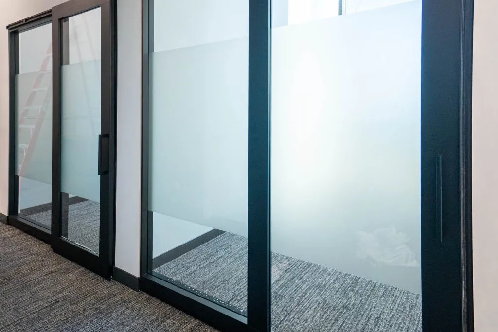
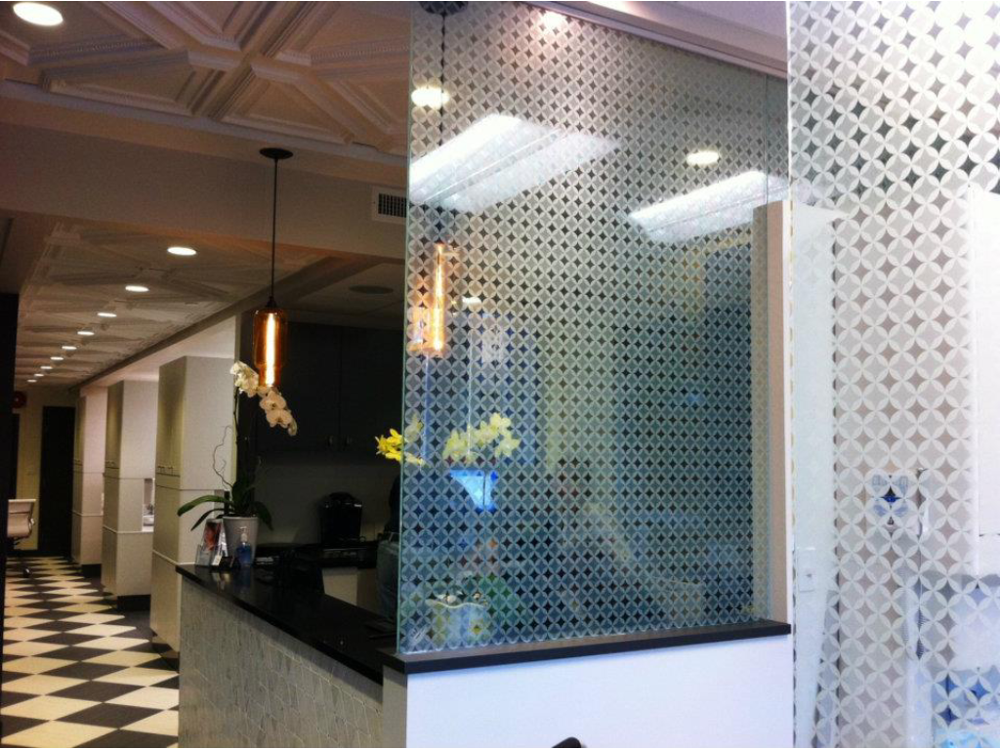

Office spaces
Meeting rooms and partitions
Screen eye-level views across conference rooms or private work areas while deciding which edges should stay clear.
Bring privacy and visual definition to office glass, doors, partitions, and home windows. Campbell Window Film installs frosting on existing glass, with coverage and design chosen for each space.
Tell Campbell what you need to screen, what you still want to see, and which city your project is in. You can explore local service areas below.

Commercial and residential glass
Campbell founded in 1988
Privacy bands and custom designs
Where frosting fits
Choose coverage by the view you want to interrupt. A meeting room, reception wall, and bathroom window each need a different answer.
Screen eye-level views across conference rooms or private work areas while deciding which edges should stay clear.
Combine screening with an intentional entrance or brand detail. Clear cutouts remain visible, so placement matters.

Focus on the panes and sightlines that need privacy. Campbell also lists shower glass as a possible application; suitability must be checked for the surface.
See the treatment
A frosted area can be broad, narrow, patterned, or shaped around artwork. These photos illustrate different visible treatments; a sample on your own glass is the best way to judge a proposed finish.
Explore decorative filmPlan the installation
Share the problem you need to solve before settling on a pattern or product name. Campbell can then discuss a suitable finish and installation scope.
Note who needs privacy, from which side, and whether lighting changes after dark.
Send photos, approximate pane sizes, your project city, and any known coating or existing film.
Discuss full frost, bands, patterns, gradients, or artwork and request a sample where the finish is hard to judge.
Review the written quote, access requirements, preparation, installation details, care guidance, and applicable warranty.
Quote planning
The right estimate depends on the glass and the finish, not a one-size-fits-all price. Campbell can confirm what is included for your project.
Request an installation quotePanel count, coverage, film choice, artwork, access, and removal or preparation may affect scope. Request the written details of materials, fitting, and any warranty before deciding.
Practical answers
For a final recommendation, describe the glass, lighting, and privacy goal to Campbell.
Ask Campbell a questionIt can obscure detail through the treated area, but it is not one-way. Interior lighting may reveal silhouettes, especially when someone is close to the glass. Review the finish under the lighting conditions you care about.
A full frosted area limits a clear view through that part of the pane. Bands or clear sections can preserve chosen views; the right layout depends on where people stand and what they need to see.
Compatibility depends on the glass, coating, and selected film. Share what you know about the pane and ask Campbell to assess suitability before choosing a finish.
Campbell’s current service information describes partial frosting, patterns, gradients, and custom printed designs. Confirm the proposed artwork, placement, and finish for your specific glass.
Care and removal depend on the film and adhesive. Ask for the selected film’s written cleaning and removal guidance; avoid abrasive tools or products unless they are approved for it.
Ask Campbell for the written terms covering the selected material and installation. Coverage and exclusions can differ by product and project.
Service areas
Explore Campbell’s location pages for the cities below. When you ask about frosted film, include the project address and a photo of the glass so the team can confirm the right next step.
Campbell is based in Huntington Beach. Choose your city for local service information, and include your project address when you enquire.
Start the conversation
Whether you are planning an Anaheim office partition or a Santa Monica home window, start with the surface, the sightline, and the project address. Campbell can confirm the frosting options and installation scope for your location.